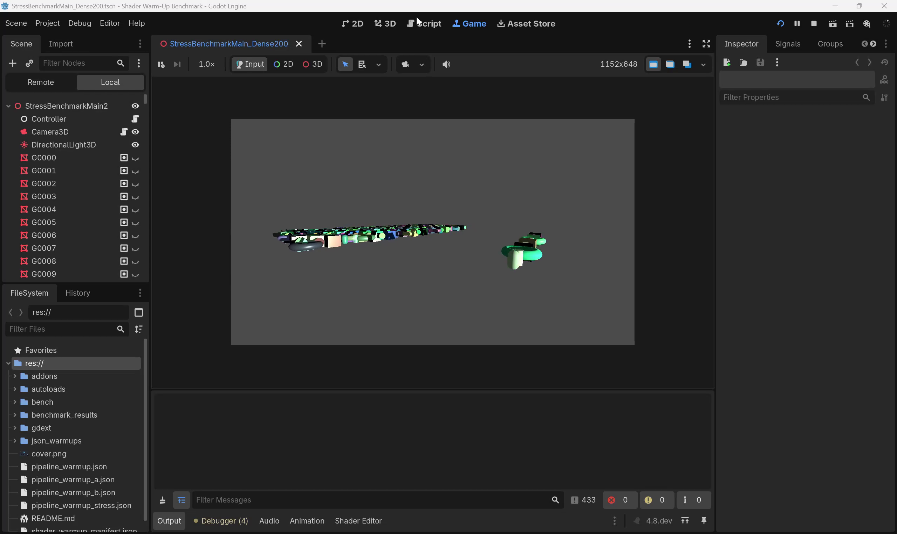
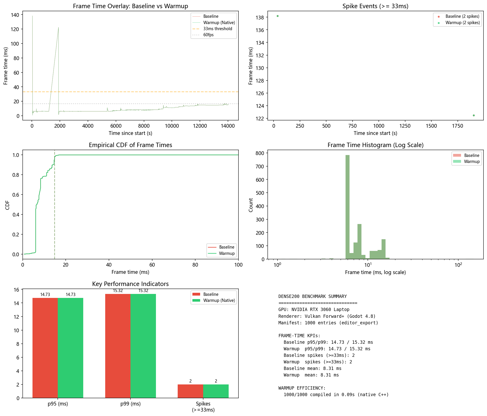

Native C++ 管线预热 — Dense200 场景 (800 MeshInstance3D) 帧时间分析
Dense200：800 个标准材质的 MeshInstance3D，以 0.01s 间隔逐步 Reveal，CSV 记录窗口 30 秒。

下方为场景启动后的运行录屏，展示 BenchmarkController 逐步 Reveal 800 个网格对象的过程：
| 指标 | Baseline | Warmup | Delta |
|---|---|---|---|
| Total Frames | 1,635 | 1,635 | 0 |
| Mean (ms) | 8.31 | 8.31 | 0.00 |
| p95 (ms) | 14.73 | 14.73 | 0.00 |
| p99 (ms) | 15.32 | 15.32 | 0.00 |
| Min (ms) | 0.72 | 0.72 | 0.00 |
| Max (ms) | 138.2 | 138.2 | 0.00 |
| Spikes >=16ms | 3 | 3 | 0 |
| Spikes >=33ms | 2 | 2 | 0 |
| Spikes >=50ms | 2 | 2 | 0 |

参考报告使用 GDExtension 方案在 NVIDIA RTX 4050 Laptop 上测试。本工作为原生 C++ 引擎集成方案。
| 指标 | Native C++ (本工作) | GDExtension (参考) | 提升 |
|---|---|---|---|
| 预热方式 | 渲染层直接调用 pipeline_create | Scene Tree + ResourceLoader | — |
| 编译条目 | 1,000 / 1,000 | 97 / 1,000 | — |
| 预热耗时 | 0.09s | 5.0s | ~55x |
| 吞吐量 | ~11,000/s | ~19/s | ~555x |
| GPU | RTX 3060 Laptop | RTX 4050 Laptop | — |
| Dense200 p95 | 14.73 ms | 6.94 ms | — |
| Dense200 p99 | 15.32 ms | 8.33 ms | — |
pipeline_warmup.json) → 去重合并 → 编译 1000 条管线 → BenchmarkController 等待预热完成 → FrameTimeLogger 开始 CSV 记录 → 逐步 Reveal 800 个 MeshInstance3D → 30s 后自动退出
| 层级 | 组件 | 语言 | 说明 |
|---|---|---|---|
| 引擎核心 | PipelineWarmupRD | C++ | 预热调度、编译、去重、缓存持久化 |
| 渲染器 | ForwardClustered / ForwardMobile Provider | C++ | 注册预热回调 + 运行时增量收集 |
| 场景层 | FrameTimeLogger + BenchmarkController | GDScript | 帧时间 CSV 记录 + Reveal 协议 |
| 编辑器 | ShaderWarmupTool 插件 | GDScript | 场景扫描 → JSON manifest 生成 |
| 分析 | analyze_benchmark.py | Python | CSV → p95/p99/Spikes → matplotlib 图表 |
add_runtime_entry() 在管线创建路径上追加 ~1-5μs（MutexLock + Vector.push + Dictionary 填充），管线编译本身是毫秒级的（1-10ms），开销可忽略。FrameTimeLogger.gd 每帧执行一次 delta * 1000.0 + Array append，是项目自带的测量代码，不影响渲染管线。如需移除可在 autoload 中注释。